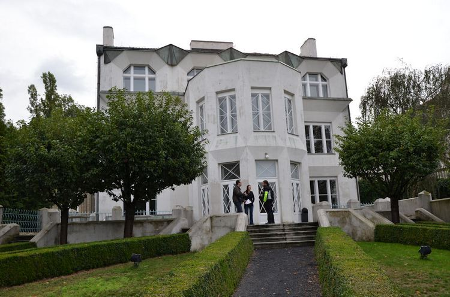
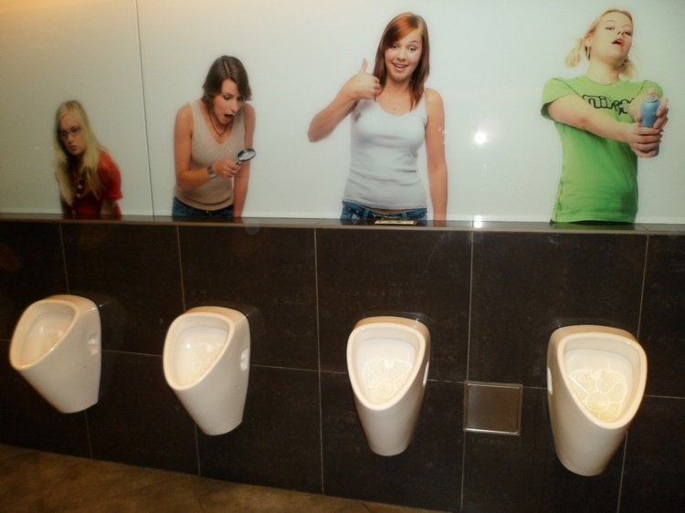

Metro map | Weather outlook | Useful links for Prague
Visiting Prague, Czech Republic (2)No, this is not a rocket or spaceship getting ready to go into outer space but simply Prague's out-of-this-world TV tower. To go up to the top for a 360° panoramic view of Prague's city you have to pay an admission fee of 150Kc (or 100 Kc if you are a senior citizen). The nearest metro station to go there is Jiriho z Podebrad (Line A).
  More information for visitors to PragueAirport to city: Depending on which metro station in the city you want to get off, you can take either Bus 119 to its terminus at Dejvicka (for Line A of the underground) or Bus 100 to its terminus at Zlicin (for Line B). The cost of either one of the buses plus the continuation by underground is 32Kc (September 2012 price). At that price a ticket entitles the holder to travel for 90 minutes using any of the public transport (bus, tram, metro, even the funicular train to Petrin Hill). But instead of buying the 32Kc ticket you might consider paying 110Kc for a ticket that is valid for 24 hours so if you use it on the airport bus at 17h00 you can still use it till 17h00 the next day. A good bargain! By the way, Prague's international airport, formerly known as Ruzyne Airport, was renamed Vaclav Havel Airport Prague on 5 October 2012. So if you should see Ruzyne Airport mentioned in some guide books don't be confused, it's the same airport! Money: The official currency of the Czech Republic is the Czech koruna (Kc locally or CZK internationally). In mid-September 2012 one euro was worth 24 Kc. Although the Czech Republic is a member of the EU, it still sticks to its own currency. However most shops and restaurants will accept the equivalent payment in euro. When you withdraw korunas from some ATM machines you will be given the amount that is going to be debited from your account in your own currency and you are given a choice either to accept the rate of conversion used or not. I found that it is much more advantageous to go to the local money-changer than get your korunas with your Visa card. In order to obtain 400 Kc my Visa card was debited for 18.07 euros while the local money-changers (you will find them everywhere) will charge you only 16.66 euros in exchange for 400 Kc on that same day. Of course in this case it is the euros or the US dollars that will be rounded up and not the korunas. Markets: The main fruit and vegetable market is in Havelska Street near the Mustek metro station. It's not of too much interest. A bigger market selling clothes, bags, household items and food is frequented more by the locals than tourists. It is near the Vltavska metro station (the market is quite hidden so if you manage to find someone in the quiet area just show him the name of the market in Czech which is Prazska Trznice). There is a tram that stops right in front of the market but unfortunately I was not able to find out where you can get on it. Or you might ask where the McDonald's is as it is right at the entrance to the market. Don't be surprised though to see that almost all the traders here are Vietnamese immigrants (so is the food sold there, cheap and tasty but Vietnamese/Chinese food mostly). It seems that the first Vietnamese immigrants came to the then communist-run Czechoslovakia in the eighties, having been invited by the communist regime as guest workers. They decided to stay on even after the communists left. Alcoholic drinks: After 23 people died in just over a week from taking alcoholic drinks that have been laced with methanol by bootleggers, the Czech government prohibited the sale of alcoholic drinks containing 20% or more of alcohol content throughout the country from mid-September 2012 (just my bad luck?). So you will now have to forget about bringing home becherovka, absinthe or vodka for friends or to remind yourself of your Czech holidays. Language: English is little spoken here though you will come across some Czechs who speak very good English. For someone who has to find his way on his own around Prague the best solution is to get a guidebook where both the English names AND their Czech names are given. In such a case you need only point at the name in Czech to be shown the right direction to take. I am indebted to the many Czechs who have pointed me to the right direction, sometimes struggling with their smattering of English in order to be helpful. Internet cafe: You don't find many of these in Prague city. One such is located at Male Namesti, 13 (near the Little Square) and charges 70 Kc for an hour's connection. It is open from Monday to Sunday from 10h00 to 23h00. They even lent me a card adaptor with which I was able to copy all the photos from my camera into my USB memory stick. Post Office, etc: The main Post Office is near Wenceslas Square along Jindrisska street, at number 14; the central railway station is at Hlavni Nadrazi while the international bus terminus is at Florenc. In both cases the metro stations that go there carry the same names. But bear in mind that there are other train and bus terminuses as well. The main Tourism Office is conveniently located near the Old Town Square. Petrin Tower: Whether you prefer to climb up the 299 steps to the observation tower or save your energy by taking the lift up, you will still have to buy the same ticket (unlike the Eiffel Tower in Paris where it is cheaper to climb up than to take the lift). In mid-September 2012 the admission to the Petrin observation tower costs 105 Kc for an adult (55 Kc for senior citizens). Note that although the tower is only 60m high yet it is on top of Petrin Hill which itself is 318m above sea level, making it higher than the 324m Eiffel Tower when we are talking about the commanding views over the city. Historical note: Prague was the capital of Czechoslovakia until 1993 when Czechoslovakia was split up into the Czech Republic and Slovakia. It then became the capital of the Czech Republic while Bratislava became the capital of Slovakia. Back to Part 1 |